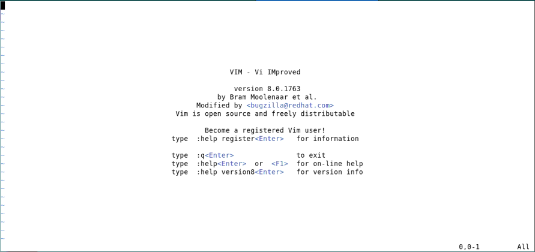
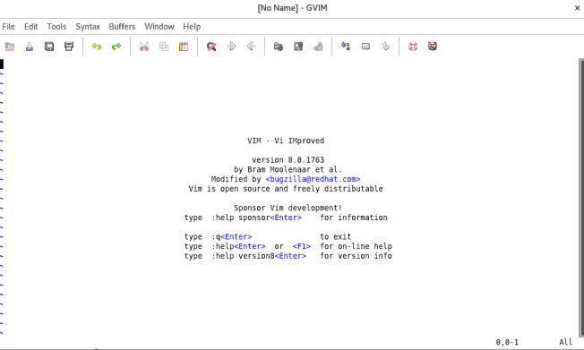
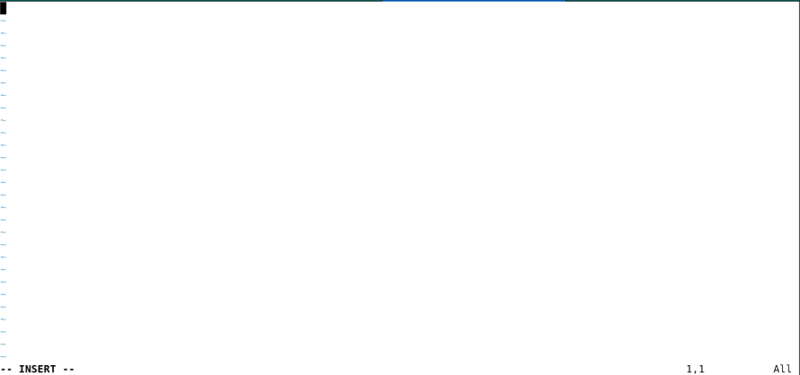
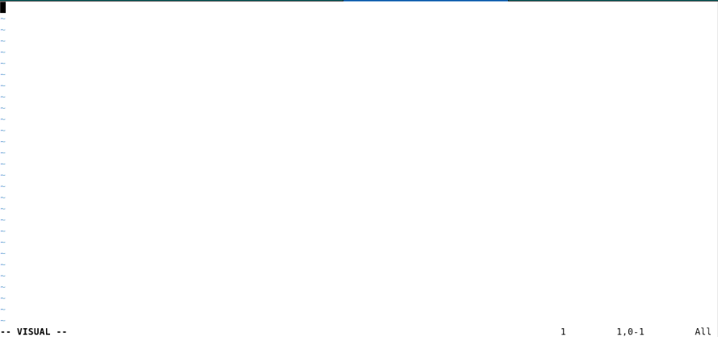
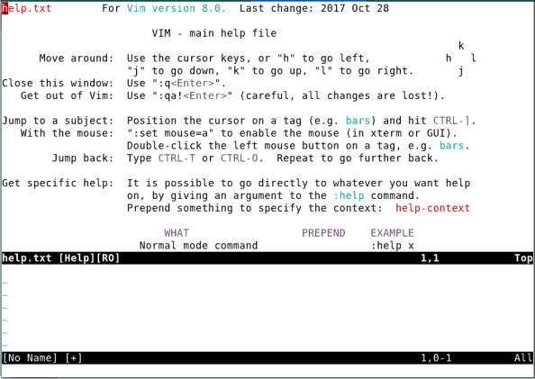
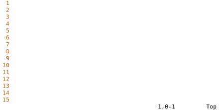

Vim — Complete Guide¶
Introduction¶
- Vim is a highly efficient, versatile, and powerful text editor.
- It is keyboard-centric, designed for users who prefer minimal keystrokes and maximum control.
- Vim is a modal editor,
- Normal Mode: Default mode for navigation and editing.
- Insert Mode: For inserting and editing text.
- Visual Mode: Used for selecting and manipulating blocks of text.
- Command Mode (Ex mode): Allows execution of colon-prefixed commands.
- GVim is the graphical version of Vim, offering a user-friendly GUI with:
- Menus, toolbars, and mouse support.
- Enhanced colour schemes and font customisation.
- Clipboard integration with the desktop environment.
- Both Vim and GVim share the same powerful engine and are extensively used in programming, system administration, and text processing tasks.
Vim Installation¶
- Linux (Debian/Ubuntu):
sudo apt install vimsudo apt install gvim(for GUI) - Linux (RedHat/Fedora):
sudo dnf install vim-enhancedsudo dnf install gvim - macOS (Homebrew):
brew install vimbrew install macvim(GVim alternative) - Windows:
Download installer from
https://www.vim.orgOr install viachoco install vim(using Chocolatey)
Running Vim for first time¶


Basic Editing¶
Modes¶
- Vim is a modal editor. Behavior changes with the mode.
- Normal Mode: Default mode (no label or shows filename).
- Insert Mode: Shows
--INSERT--at the bottom. - Visual Mode: Shows
--VISUAL--. - To insert text:
- Press
ito enter Insert Mode. - Type content.
- Press
Escto return to Normal Mode. - Press
Escanytime to return to Normal Mode.


Inserting and Deleting text¶
- To insert text:
- Press
i, type your text, then pressEsc. - Example:
iA young<Esc> - Vim does not wrap lines automatically.
- Press
Enterto start a new line. - Press
xto delete the character under the cursor. - Example: Move to the start of a line and type
xxxxxxxto delete 7 characters.
Before:
After:
Moving Around¶
- In Normal Mode, use:
- These keys are on the home row—fast and easy to reach.
- Mnemonics:
his left,lis rightjlooks like a hook downkpoints up
Undo and Redo¶
| Key / Command | Description |
|---|---|
u |
Undo last change |
u (repeat) |
Continue undoing previous changes |
CTRL + R |
Redo last undone change |
U |
Undo all changes on current line |
U (again) |
Redo changes undone by U |
Saving and Exiting¶
| Command | Description |
|---|---|
:w |
Save file |
:wq |
Save and quit |
:wq! |
Force save and quit |
:x |
Save and quit if modified |
ZZ |
Save and quit |
:q |
Quit (only if no changes) |
:q! |
Quit without saving |
Insert and Append¶
| Key | Description |
|---|---|
i |
Insert before cursor |
a |
Append after cursor |
I |
Insert at start of line |
A |
Append at end of line |
Opening New Lines¶
| Key | Description |
|---|---|
o |
Open new line below and enter insert mode |
O |
Open new line above and enter insert mode |
Help System¶
| Command / Key | Description |
|---|---|
:help |
Open help window |
:help {topic} |
Search help for specific topic |
Ctrl + ] |
Follow link in help |
Ctrl + o |
Go back in help |
:q |
Close help window |

Accessing Help in Vim¶
Accessing the Help Screen
- Press
<F1>to open the general help screen in Vim. - If your keyboard has a
<Help>key, you can press that to open the help. - Once in the help screen, navigate using Vim's normal commands like
h,j,k, andl.
Exiting Help:
- To exit the help screen, use ZZ to save and quit, or :q! to quit without saving.
Fast Editing¶
Fast Editing¶
Using a Count to Edit Faster¶
Using Numbers to Speed Up Editing
- Precede commands with a number to repeat actions:
9k– Move up 9 lines (instead of typingkkkkkkkkk).3a!– Append!three times to the end of a line.3x– Delete 3 characters under the cursor.
General Rule:
- Numbers modify most Vim commands. For example, 3dw deletes 3 words.
- This can significantly speed up your editing process.
Word Movement¶
wmoves the cursor forward by one word.bmoves the cursor backward by one word.- Numeric prefixes repeat the movement; e.g.,
4bmoves back four words. - A "word" is defined by Vim based on whitespace and punctuation.
- Uppercase variants like
WandBuse different word boundaries (non-whitespace).
Moving to the Start or End of a Line¶
$moves to the end of the current line.- Also mapped to
<End>and<kEnd>(keypad End). - Numeric argument moves to end of the n-th line; e.g.,
2$goes to end of the next line. ^moves to the first nonblank character of the line.0,<Home>, and<kHome>move to the first character of the line.- Numeric prefixes are accepted but ignored by these commands.
Moving to a Specific Line¶
Gmoves to a specific line number when used with a numeric prefix.- Example:
3Gmoves to line 3;1Gmoves to the top of the file. - Without an argument,
Gmoves to the end of the file. - A workaround like
9999kfollowed by2jworks but is inefficient. - Useful when responding to compiler errors referencing specific line numbers.
For navigating compiler errors efficiently, see commands like :make and :clist.
Line Numbers in Files¶
- Line numbers help indicate position in the file.
- Use
:set numberto enable line numbering. - Use
:set nonumberto disable line numbering. - The
numberoption is Boolean — it can be toggled on or off. - Line numbers appear on the left, aiding navigation and debugging.
- Often used with commands like
G,:3, or/pattern.

Scrolling Up and Down¶
CTRL-U: Scrolls up half a screen of text.- Up means backward in the file (text moves down on the screen).
CTRL-D: Scrolls down half a screen of text.- Navigating with
CTRL-UandCTRL-Dhelps you move through the file quickly.
Delete Commands in Vim¶
Common Delete Operations in Normal Mode
| Command | Description |
|---|---|
x |
Delete character under cursor |
X |
Delete character before the cursor |
dw |
Delete from cursor to end of word |
d$ |
Delete from cursor to end of line |
dd |
Delete the entire current line |
d0 |
Delete from cursor to beginning of line |
dG |
Delete from cursor to end of file |
dgg |
Delete from cursor to beginning of file |
d{motion} |
Delete text defined by a motion (e.g., d2w, d/word) |
Other Useful Variants:
- c{motion} – Delete and switch to insert mode (e.g., cw, cc).
- D – Shortcut for d$, deletes to end of line.
- J – Join line below with current line (not a delete but useful for cleanup).
Where to Put the Count (3dw or d3w)¶
3dw: Deletes one word three times.d3w: Deletes three words at once.- Both commands have the same effect — a difference without a distinction.
- Use two counts, such as
3d2w. 3d2w: Deletes two words, repeated three times, for a total of six words.
Changing Text with the c Command¶
- The
ccommand changes text, liked, but leaves you in insert mode. cw: Changes a word (deletes the word and enters insert mode).dw: Deletes a word and the space following it.-
Example:
-
Before: "To err is human."
-
After: "To screw is human." (
cwscrew<Esc>) -
cc: Deletes the entire line and enters insert mode. c$orC: Changes text from the cursor to the end of the line.
Joining Lines with the J Command¶
- The
Jcommand joins the current line with the next one. - A space is added between the lines to separate them.
- If a count is specified, the count of lines (minimum of two) are joined.
-
Example:
-
Before: "This is line one."
"This is line two." - After: "This is line one. This is line two."
Replacing Characters with the r Command¶
- The
rcommand replaces the character under the cursor with another character. - Example:
rxreplaces the character under the cursor withx. - Can be used with a count:
5rareplaces the first five characters witha. -
Example:
-
Before: "This is a test."
-
After: "This is a test." (
rsreplaceszwiths) -
5ra: Replaces the first five characters witha. -
Example:
-
Before: "This is a test."
- After: "aaaaais a test."
Changing Case with the ~ Command¶
- The
~command changes the case of a character (uppercase to lowercase and vice versa). -
Example:
-
Before: "now is the time..."
-
After: "Now is the time..." (
~) -
If a count is specified, it changes that many characters.
-
Example with count:
-
Before: "NOW IS the TIME..."
- After: "Now is THE time..." (
14~)
Using Keyboard Macros¶
- Keyboard macros allow you to record a series of keystrokes and replay them automatically.
- The
q*character*command starts recording keystrokes into a register named character (where character is betweenaandz). - After recording, use
qto stop the recording. - The recorded macro can then be executed with
@*character*. - If a count is specified, the macro will be executed that many times (e.g.,
3@*character*repeats the macro three times).
Example of Using Keyboard Macros¶
stdio.h
fcntl.h
unistd.h
stdlib.h
include "stdio.h"¶
include "fcntl.h"¶
include "unistd.h"¶
include "stdlib.h"¶
To achieve this, follow these steps:
- qa: Start recording the macro in register a.
- ^: Move to the beginning of the line.
- i#include "<Esc>: Insert text at the start of the line.
- $: Move to the end of the line.
- a”<Esc>: Insert the double quote.
- j: Move to the next line.
- q: Stop recording.
- @a: Execute the macro (this applies the changes to the first line).
- 3@a: Execute the macro 3 times to apply the changes to all three lines.
Using Digraphs in Vim¶
- Digraphs allow you to enter characters not available on the keyboard (e.g., special symbols or foreign characters).
- To enter a character, press
CTRL-Kfollowed by two characters representing the symbol. - Example: To insert a copyright symbol
©, typeCTRL-K c0. - View available digraphs using
:digraphs, which shows a table of key combinations and their symbols. - Example from the digraph table:
CTRL-K ~!inserts the¡character (character number 161).- Digraphs are generally based on the ISO-646 character set, but your system might use a different character set.
Filtering Text (Using External Commands)¶
- Vim can process text through external shell commands.
- Syntax:
!motion command - The selected text is:
- Sent to the external command.
- Replaced by the command’s output.
-
Powerful when used with tools like
sort,awk,sed, etc. -
Place cursor on line 1.
- Type:
!10Gsort - Breakdown:
!– Begin filter.10G– Select until line 10.sort– External sort command.- Result: Lines 1–10 are replaced with sorted output.
Inserting Shell Output with !!¶
- Runs the given command and inserts its output at the current line.
- Syntax:
!!command -
Common use: insert file lists, timestamps, or system info.
-
!!ls— Inserts list of files in current directory.
(Windows: use!!dir) !!date— Inserts the current date/time.
Useful for timestamps or logs.
These commands are very handy for generating logs or including shell data directly in your text.
Summary: Fast Editing¶
| Feature | Description |
|---|---|
| Numeric Counts | Prefix commands with numbers: 3x, 9k, 3a! |
| Word Navigation | w, b, 4b, W, B — move across words |
| Line Navigation | $, 0, ^, G, 1G, 3G |
| Line Numbers | Enable with :set number, disable with :set nonumber |
| Scrolling | CTRL-U, CTRL-D — scroll half screen up/down |
| Delete Commands | x, X, dw, dd, d$, dG, d{motion} |
| Change Commands | cw, cc, c$ — delete and switch to insert mode |
| Join Lines | J joins current line with next; count joins multiple lines |
| Replace | rx, 5ra — replace character(s) under cursor |
| Change Case | ~ toggles case; 14~ affects 14 characters |
Search and Replace¶
Search and Replace¶
Single-Character Search — f, F¶
f*x*moves forward to the next occurrence of character x on the same line.F*x*moves backward to the previous occurrence of x on the same line.- Numeric prefixes repeat the operation:
3femoves to the thirdeforward.2Famoves to the secondain reverse.- Example:
fhmoves the cursor to thehin “human”. - Spaces can be searched:
5f<Space>moves to the fifth space character.
Figure 2.4: Demonstrates f and F movements.
Single-Character Search — t, T and Cancelling¶
t*x*moves forward to just before character x.T*x*moves backward to just before character x.- Examples:
ti,t,,2to2Ta,3te- Use
to cancel a pending search or any incomplete command (e.g., f<Esc>). acts as a universal cancel key in many Vim operations.
Figure 2.5: Demonstrates t and T behavior.
Forward and Backward Searches¶
- Forward Search:
- Use
/patternto search forward. - Press
<Enter>to jump to the match. -
Use
nto repeat in the same (forward) direction. -
Backward Search:
- Use
?patternto search backward. - Use
nto repeat the last search direction. -
Use
Nto repeat in the opposite direction. -
Search Direction Rules:
- Last search command (
/or?) defines direction. nrepeats in that direction;Nreverses it.
For better context, use :set number to show line numbers.
Highlighting, Incremental Search, and History¶
- Highlighting matches:
- Enable:
:set hlsearch - Disable:
:set nohlsearchor:nohlsearch - Incremental search:
- Enable:
:set incsearch— matches update as user type. - Disable:
:set noincsearch - Search history:
- Press
/then<Up>or<Down>to cycle previous searches. - Example history:
/one,/two,/three - Special characters like
.*[]^/%?~$need escaping with\
Cut, Copy and Paste¶
Cut, Copy and Paste¶
Deleting and Putting (Pasting) in Vim¶
- Delete the text using
d,x, or similar commands, Vim saves the deleted text. - Use
pto "put" (paste) the text back: dddeletes an entire line.pplaces the deleted line below the current line.- Use
P(uppercase) to put the deleted text before the cursor
Line 1
Line 2 <— dd (deletes this line)
Line 3
Move to Line 1 and press p:
Line 1
Line 3
Line 2 <— pasted below cursor
Before: We will delete the word in the middle
Command: dw on delete
After dw: We will the word in the middle
Move cursor to will and press p:
Result: We will delete the word in the middle
Character Twiddling in Vim¶
- A common typo like
tehinstead ofthecan be quickly fixed in Vim. - Use the
xpcommand to swap two adjacent characters: xdeletes the character under the cursor.ppastes it after the next character.- Place the cursor on the second character (e.g., the
einteh) and pressxp.
Before: teh
Cursor on e, press xp → the
p— puts the deleted text after the cursor.P— puts the deleted text before the cursor.- Repeat the insertion using counts: e.g.,
3pinserts it 3 times.
Tip: Use xp to quickly fix letter-order typos like gril → girl!
Marks in Vim: What and Why¶
- Marks let you remember and jump to specific positions in your text.
- Set a mark using
ma— this marks the current position as marka. - There are 26 marks (a–z), plus special system-defined marks.
- To return to a mark:
- "a` — moves to the exact location (line + column)
'a— moves to the beginning of the line- Marks are persistent unless the text containing the mark is deleted.
- Use
:marksto view all current marks.
ma — Set mark a
"a— Go to marka(line + column)'a— Go to start of line with marka:marks` — List all active marks
Example: Using Marks for Deletion¶
- Move to start of the block
ma— Set markahere [0.2em] - Move to end of the block
d'a— Delete from current line to marka
Deletes all lines between the current cursor and mark a (inclusive).
This works regardless of cursor being before or after mark a.
Tip: Use marks for quick navigation and precise operations in large files!
Yanking in Vim (Copying Without Deleting)¶
- Yanking means copying text into a register without deleting it.
- Similar to delete (
d) command, but it doesn’t remove text. - Command form:
y{motion}— yank a text object. yy— yank the current line.Y— same asyy; yank entire line.- Use marks to yank large text blocks:
- Set start with
ma, move to end. - Use
y'ato yank from cursor to marka. - Paste with
p(after) orP(before).
yy — Yank current line
3yy — Yank 3 lines
y'a — Yank to mark a
p or P — Paste yanked text
Example: Yanking a Block with Marks¶
Step-by-Step Use Case
- Move to the start of the text: ma — Mark position as a
- Move to the end of the block: y'a — Yank from current line to mark a
- Move to the new location: p — Paste text after the cursor
Yanking Multiple Lines
- 3yy — Yank 3 lines starting from current line
- p — Paste after the cursor
- P — Paste before the cursor
Yanking is safer than deleting — original text stays untouched!
Summary: Cut, Copy, Paste, and Marks¶
| Feature | Description |
|---|---|
| Delete | x, dw, dd — delete character, word, or line |
| Paste | p — paste after cursor; P — paste before cursor |
| Cut + Paste | dd then p or P to move line(s) |
| Copy (Yank) | yy — yank line; y{motion}, y'a — yank by motion or mark |
| Marks | ma — mark position; 'a, 'a — jump to mark a |
| Use Marks with Delete | d'a — delete from cursor to mark a |
| Use Marks with Yank | y'a — yank from cursor to mark a |
| Swap Characters | xp — swap two characters (e.g., fix "teh" → "the") |
| Alternate File Toggle | CTRL-^ — switch to the last edited file |
| Multi-File Navigation | :args, :next, :prev, :wnext, :wprev — move across files |
Working with multiple files¶
Working with multiple files¶
Editing Another File in Vim¶
- To open another file without quitting Vim:
:vi file.txt– Opensfile.txt, closes current file.- If changes are unsaved: Vim warns with
No write since last change. - Options when warned:
:write– Save current file before switching.-
:vi! file.txt– Discard unsaved changes and open new file. -
:e file.txt– Equivalent to:vi file.txt :view file.txt– Opens file in read-only mode- Note: user can still edit a read-only file, but must use
:write!to force saving.
Editing Multiple Files in Vim¶
- Start Vim with multiple files:
gvim one.c two.c three.c- Only
one.copens initially. - Switch to next file:
:next– Move to next file:next!– Force switch (loses unsaved changes!):wnext– Save current file and switch- Set autowrite:
:set autowrite– Saves file automatically before switching- Use
:writebefore:nextto avoid losing changes.
File Tracking & Backward Navigation¶
Which File?
- View all open files and current one:
- :args – Lists open files
- Current file is in [brackets]
Back and First/Last Navigation
- Move backward:
- :previous or :Next
- :wprevious – Save and move back
- Jump to boundaries:
- :rewind – First file
- :last – Last file
Note: :first not supported — use :rewind instead.
Alternate File & CTRL-^ Command¶
- Vim remembers the last file you edited as the "alternate file"
- Use
CTRL-^to switch between current and alternate files
Example:
- Start Vim: gvim one.c two.c three.c
- After editing two.c: CTRL-^ switches to one.c
- Press again: switches back to two.c
- 1 CTRL-^ → one.c 2 CTRL-^ → two.c
Note: If no alternate file exists (e.g., only one file), No alternate file will report.
Opening and Navigating Windows (1/2)¶
| Command / Keys | Explanation |
|---|---|
:split |
Splits the screen horizontally into two windows showing the same file. Cursor stays in the top window. |
:split filename |
Opens a new window and starts editing the specified file. Each window can show a different file. |
:split +/pattern filename |
Opens a file in a new window and jumps to the first match of the pattern. Useful for quick search. |
| Click with mouse | If mouse support is enabled, click in a window to activate it. |
Opening and Navigating Windows (2/2)¶
| Command / Keys | Explanation |
|---|---|
CTRL-W w or CTRL-W CTRL-W |
Moves the cursor to the next window (cycles through open windows). |
CTRL-W j / CTRL-W k |
Moves down/up one window respectively. Handy for vertical navigation. |
:q or CTRL-W c |
Closes the current window. :q is safer and more predictable. |
CTRL-W CTRL-C |
Does nothing — cancels pending operations, not used for closing windows. |
Controlling Window Size (1/3)¶
| Command / Syntax | Explanation |
|---|---|
:3split alpha.c |
Opens a 3-line-high window editing alpha.c. Also written as :3 split alpha.c. |
:split +/pattern file |
Opens a file in a new window and jumps to the first match of pattern. |
:count split +command file |
General form. Sets window height, executes a command, and opens the file. |
:new |
Splits the window and starts editing a new empty file. |
:sview file |
Opens file in read-only mode in a split window (split + view). |
Buffers¶
- The
bufferin Vim refers to a file being edited. - A buffer is a copy of the file. Once editing is finished, the contents are written back to the file.
- Buffers hold file contents, marks, settings, and other associated data.
- A buffer's visibility depends on whether it is currently displayed on the screen.
- Hidden Buffers: A hidden buffer is not visible but still exists in memory.
Buffer States - A buffer can be in one of three states: - Active: Appears onscreen. - Hidden: File is being edited but not displayed. - Inactive: File is not edited but related information is retained. - The inactive state is useful for: - Files not edited but opened when starting Vim. - Discarded content but keeps marks and settings.
Listing Buffers¶
- Use the
:bufferscommand to list buffers. - Example output from
:buffers:
1 #h "one.c"
2 % "two.c"
3 - "three.c"
4 - four.c"
5 - "help.txt"
6 - "editing.txt"
- The first column represents the buffer number.
- The second column shows flags indicating the buffer state.
Buffer Flags
- Flags in the :buffers output:
- h: Hidden buffer.
- %: Current buffer.
- #: Alternate buffer.
- +: File has been modified.
- ~: Inactive buffer.
- Select a buffer using the command:
:buffer number- wherenumberis the buffer number.- If you know the filename but not the buffer number, use:
:buffer file- wherefileis the filename.- Example:
:3bufferor:buffer three.c.
Other Buffer Commands¶
- Other buffer-related commands:
:bnext- Go to the next buffer.:bprevious- Go to the previous buffer.:count bnext- Go to the next buffercounttimes.:count bprevious- Go to the previous buffercounttimes.- Additional buffer options:
:blast- Go to the last buffer in the list.-
:brewind- Go to the first buffer in the list. -
:set hiddenkeeps the contents of all buffers around even if they leave the screen. - If the
hiddenoption is set, buffers do not become inactive but are instead hidden when leaving the screen. :hidealways hides the current buffer, regardless of the "hidden" option.
Visual Mode¶
Visual Mode¶
What is Visual Mode?¶
- Visual mode allows for selecting and operating on a text region interactively.
- It is similar to selecting text with a mouse in a GUI editor, but entirely keyboard-driven.
- Once text is highlighted, apply commands like:
d– deletey– yank (copy)c– change- Useful for editing, formatting, or copying blocks of text quickly.
- Supports character-wise, line-wise, and block-wise selection.
Visual Modes¶
Modes:
- v — Character-wise mode
- V — Line-wise mode
- CTRL-V — Block-wise mode
Operations:
- Move cursor to highlight text
- Use commands like d, y, c to operate
- Example: v, move, then d deletes selection
Exiting Visual Mode:
- <Esc> — Back to normal mode
- CTRL-C — Alternative to <Esc>
- CTRL-\ CTRL-N — Silent return to normal mode (no beep)
Editing with Visual Mode¶
Basic Steps:
- Select text using visual mode (v, V, CTRL-V).
- Apply an editing command.
Editing Commands:
- d — Deletes highlighted text.
- D — Deletes full lines, even if only partially selected.
- y — Yanks (copies) the selection to a register.
- Y — Yanks full lines.
- c — Deletes and enters insert mode.
- C — Like c, but for full lines.
- J — Joins highlighted lines with spaces.
- gJ — Joins lines without spaces.
- Switch visual modes at any time: e.g., press CTRL-V while in v mode.
- Press <Esc> or the same visual key again (v, V, etc.) to exit.
Commands for Programmers¶
>— Indents selected lines by one shift width.<— Un-indents selected lines by one shift width.=— Auto-indents the selected text.CTRL-]— Jumps to the definition of the highlighted function or tag.K— Looks up the selected keyword using themancommand.
Note:
- Indentation commands behave differently in block mode.
- shiftwidth setting controls the amount of space used for indentation.
https://github.com/RukmiChavda
2026